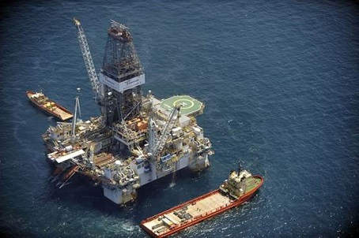

Quiroga

The Quiroga is the highest producing component of the Sigsbee Field, with more than a third of the discovered natural
resources being drilled and produced from four wells. The offshore oil rig - a semi-submersible - is located south
of the Arana spar and southwest of the Orizba, using a pipeline to connect to the Arana to transport crude oil production
back to the Ojeda plant. The Quiroga produced over 5.4 tons of crude oil in 2010, with production continuing to increase at
a steady rate as additional wells are added and new techniques, such as water injections, are used to stimulate production.